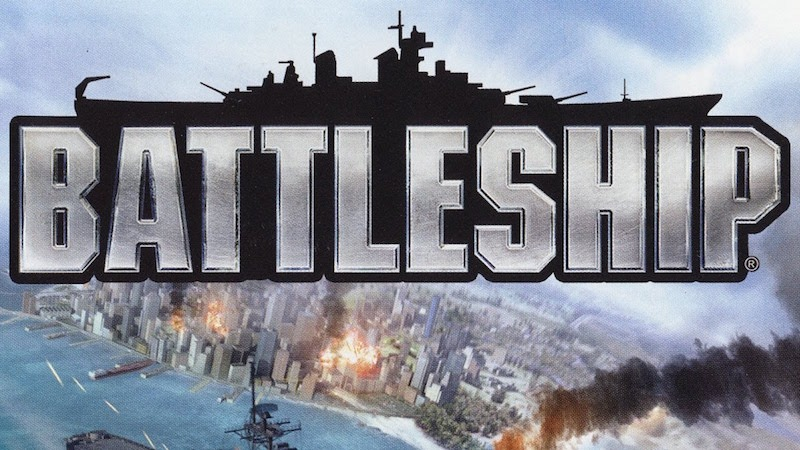
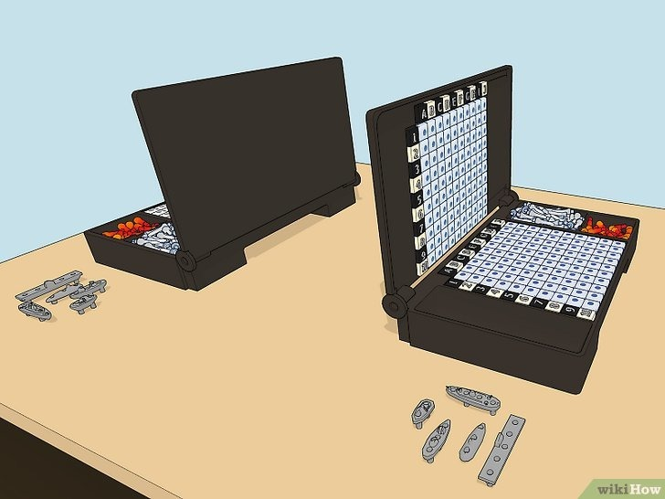

OBJECTIVE: Sink all five of your opponents’ ships first!
NUMBER OF PLAYERS: 2 players
MATERIALS: 2 game boards, 10 ships, red pegs, white pegs
TYPE OF GAME: Strategy board game
Introduction to Battleship
Battleship has been a popular game for generations, having inspired multiple board games, handheld electronic versions, computer games, and even a film. However, after all those versions and rule changes, the game is still simple enough to be played with only graph paper and pens. In this tutorial, we’ll teach you the rules for the classic board game and the old-school graph paper version. Stay safe out there on the open seas!
Step-by-Step Process to Play
Step 1: Players sit opposite each other
The standard Battleship board game set comes with two boxes, one for each player. Each box opens to reveal two grids, one on each inside surface. As you set up, make sure you and your opponent are seated opposite one another so you can’t see the inside of one another’s boxes.
Step 2: Ensure you have all the ships
In Battleship, ships come in various lengths, taking up a different number of squares on the grid. You and your opponent should both have identical collections with 5 ships each as well as plenty of white and red pegs. The typical 5 ships include
- The aircraft carrier -five squares long denoted by A*
- The battleship - four squares long denoted by B*
- The cruiser - three squares long denoted by C*
- The submarine - three squares long, same as the cruiser denoted by S*
- The destroyer - two squares long denoted by D*
Step 3: Arrange your ships secretly
With the boxes open, you and your opponent must place your 5 ships on the lower grid of your boxes, anchoring each ship into the holes on the grid. Don’t look at what your opponent is doing, and make sure they can’t see your ship configuration either. Follow these rules while placing your ships:
Rules of Placement
- Ships can be placed horizontally or vertically, but not diagonally.
- You must place all five ships on the grid.
- Every ship must be completely on the grid. No ship can hang off the edge of the board.
- Ships cannot overlap each other.
- Once your ships are placed and the game has begun, you are not allowed to move your ships again.
How to Arrange your Ships
Player's Battleship Board
Player's Pins Board
In Battleship, each player has two boards. On the left board, players secretly arrange their ships either horizontally or vertically, ensuring that the ships do not overlap and remain within the grid's boundaries.
The right board right board is used to track attacks, where players place pins at specific coordinates to target their opponent’s ships.
The objective is to deduce the locations of the hidden ships. Players take turns calling out coordinates, marking hits or misses as they go. A ship is considered sunk when all its sections have been hit. The game continues until one player successfully sinks all of their opponent’s ships, leading to victory.
Step 4: Decide which player goes first
If you and your opponent don't agree on who should go first right away, flip a coin or decide in some other randomized way. If you’re playing multiple games in a row, consider letting the player who lost the last game go first in the next one.
Step 5: Take turns firing shots
Hit Scenario
In the hit scenario, players take turns attempting to strike their opponent's ships. When a player selects a coordinate to attack, the game checks if there is a ship located at that coordinate. If there is a ship present, the attack is considered a hit, and the corresponding part of the ship is marked. A visual indication (such as a red color) shows that the attack was successful. Conversely, if no ship is present, the attack is marked as a miss (typically shown in gray). The game continues until all of one player's ships are sunk, declaring the other player as the winner. Below this explanation there are two grids one for "player 1's battleship grid board "and the other for "player 2's battleship pin board", You as a player can access them to show you a brief explanation on how the hit scenario works;
player1's Battleship board
player2's battleship pin board
Miss Scenario
If you call out a coordinate that misses the other player’s ships, the opposing player calls out, “Miss!” You then put a white peg on the corresponding coordinate on the targeting grid to mark where you’ve missed. For example, if you called out B2, which was a miss, place a white peg on the B2 slot of the targeting grid. This marks the end of your turn.
Player 1's Battleship board
Player 2's Battleship pin board
Sink Scenario
Announce when each ship sinks. If every square of a ship gets hit, that ship is considered sunk. Players should inform each other whenever a ship is sunk, naming the type of ship that was hit.
Player 1's Board
Player 2's Pin Grid
End Game - a Win and Loose Scenario
Player 1 Battleship Board
Player 2 Pins Board
To simulate a 2 minutes game play, click the button below:
Let's take an example - player 2 wins the game and player looses the game
In this scenario, Player 2 attempts to attack Player 1 by placing pins on their pinboard and calling out the coordinates to hit Player 1’s ships. Player 1 then checks their own shipboard to see if the coordinate matches the location of any of their ships.
If it does, it's marked as a hit, and the ship starts taking damage. If not, it’s marked as a miss. Player 1 also has a chance to attack by calling out coordinates from their pinboard, targeting Player 2’s ships.
The game continues with each player taking turns until one player successfully sinks all of the other player’s ships, declaring them the winner.
In this scenario, we're only simulating player 2 attacking player 1, but when playing the game, both players will have a chance to attack their opponent and also take hits to their ships.